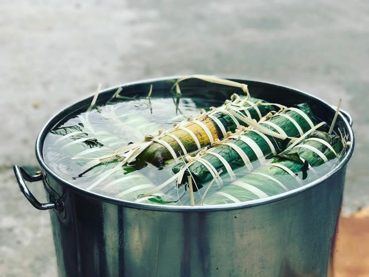

Từ khi về đến quê, Liên như sống lại những tháng ngày cũ – những buổi chiều ngồi bên bếp lửa với ngoại, tiếng củi cháy tí tách như nhắc nhở về những ấm áp mà lâu nay nó đã lãng quên. Tối qua không ngủ được, sáng nay vừa có chút nắng hắt qua cửa sổ, Liên đã bật dậy, rửa mặt bằng gáo nước mát lạnh từ chum rồi xuống nhà dưới. Ngoại vẫn như xưa, một tay đẩy củi, tay kia thêm bó lá dừa khô vào bếp. Giọng bà khẽ vang lên: “Dậy rồi thì về thăm má đi con… Gặp ai cũng chào một tiếng nghe con!” Lời ngoại như mệnh lệnh dịu dàng, như vỗ về, như một cú chạm nhè nhẹ khiến trái tim Liên mềm lại. Liên mỉm cười, khoác áo, quàng khăn rồi ngồi thật lâu bên bếp lửa – bếp lửa của ngoại khiến nó nhớ đến bếp lửa của má, nơi những củ khoai nướng thơm lừng, nơi gắn bó cả tuổi thơ nó từng có.
Nó lấy chiếc xe cũ, chạy một mạch về nhà. Ngoại đứng dưới mái hiên, mắt dõi theo bóng dáng nó xa dần. Về tới nhà, những ký ức ngày bé tràn về như thác. Căn nhà cũ kỹ vẫn hiện diện như xưa, nơi tiếng ba cặm cụi lể lá mai, má gấp chiếu, lũ trẻ rộn ràng canh nồi bánh tét. Tất cả như cuốn phim quay chậm. Liên thấy ba nó đang lau bàn thờ má – một hình ảnh quen thuộc ngày Tết. Dù má đã mất nhưng ba vẫn giữ gìn từng chiếc lư hương, từng chiếc đĩa sứ… như giữ gìn một phần má trong lòng. Khi Liên vừa đến, đứa em trai reo lên gọi ba. Ba nó quay lại, vừa mừng vừa ngỡ ngàng. “Cái Liên về đấy à!” – giọng ba vang lên, vừa thật vừa như mơ. Bao nhiêu cái Tết không về, chỉ là vài món quà gửi về quê, vài lời hỏi han qua điện thoại, lần này trở về, ba không cần gì nhiều – chỉ cần nó trở về, bằng da bằng thịt, là ba đã thấy ấm lòng.
Liên chào má, thắp nén nhang, nhìn vào di ảnh cũ kỹ nhưng sạch tinh không vướng chút bụi. Ba chắc hẳn đã lau ảnh mỗi ngày. Dì Hai – người phụ nữ mới trong căn nhà – đã dọn dẹp mọi thứ, chỉ chừa phần bàn thờ cho ba tự tay làm. Dì lo từ tấm chăn cái màn đến từng góc nhỏ trong nhà, căn nhà bây giờ gọn gàng ngăn nắp, khác hẳn thời nó còn ở đây. Ngày ấy, má hay la vì nó bừa bộn, vậy mà bây giờ, căn nhà này chính là ngôi nhà mà nó từng mơ ước. Dì Hai bước ra từ nhà dưới, ánh mắt đầy bất ngờ khi lần đầu gặp Liên. Câu chuyện lần đầu chạm mặt giữa hai người đầy ngập ngừng, nhưng cũng nhẹ nhàng và ấm áp. Dì hỏi han đủ điều, như một người mẹ đã chờ con gái đi xa trở về. Trong từng lời nói, từng câu hỏi, từng bữa ăn dì dọn ra, Liên dần nhận ra – tình thương thật sự vẫn còn hiện diện nơi căn nhà này.
Dì Hai không cần đợi lời đồng ý, đã tự tay dọn cho Liên một mâm cơm đủ món. Từng món tuy đơn giản nhưng đầy tình cảm, đầy sự chăm chút. Dì làm bánh Tét, cúng má, chăm em trai Liên từng chút một. Không ai nói ra nhưng Liên hiểu – đây là cách dì yêu thương ba, thương gia đình nhỏ này. Dù món ăn của dì không giống má – không đậm đà bằng, không quê mùa bằng – nhưng trong mắt Liên, món nào cũng khiến nó nhớ má. Dì đặt ly nước trước mặt, nhẹ nhàng dặn: “Ăn từ từ, kẻo mắc nghẹn!” – câu nói khiến nó nghẹn nơi cổ họng. Chưa ai ngoài ngoại từng nói với nó những câu đầy quan tâm như thế. Cảm giác thiếu thốn tình mẹ suốt những năm tháng xa quê chợt ùa về. Có lẽ, chính sự va đập của cuộc sống thành thị, sự mỏi mệt của những ngày mưu sinh, khiến nó nhìn lại rõ ràng hơn giá trị tình thân.
Liên ăn xong, chỉ kịp gật đầu khi dì hỏi có ở lại ăn tối không. Nó nhớ những năm tháng xa má, tự nấu bữa cơm cúng má rồi ngồi ăn một mình. Nay được ăn chung với ba, với dì Hai, nó thấy lòng ấm lạ. Thằng em trai kéo nó đi khắp làng, chỉ trỏ hết cái này đến cái kia, hỏi đủ chuyện về thành phố. “Ở thành phố có cái này không Hai?”, “Cái kia có không Hai?” – nó chỉ cười: “Có hết! Nhưng thành phố không có Nhà.” Không có căn bếp với bếp lửa hồng, không có tiếng ngoại, tiếng ba, tiếng dì, tiếng em… Không có tình cảm gia đình ấm áp mà hôm nay nó mới nhận ra quý giá đến nhường nào. Phải chăng, chuyến trở về lần này đã khiến nó chín chắn hơn, khiến nó thôi trách móc, thôi hoài nghi, và bắt đầu học cách đón nhận tình yêu thương – từ người thân, từ ba, và cả từ người phụ nữ mang tên Dì Hai.
Bình luận